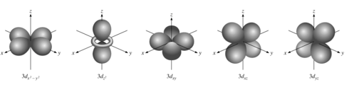
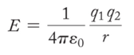

Week 5 - Day 1
Navigate using audio
End of chapter 3 / Beginning of chapter 4
Anouncements
- Going over the clicker question from last class
Schrodinger Wave Equation
- Audio 0:01:46.280749
What are the allowed values of quantum numbers?
- Audio 0:02:40.811261
Schrodinger Wave Equation Ψ = fn(n, l, ml, ms)
- Ψ = fn(n, l, ml, ms)
- principal quantum number n
- n = 1, 2, 3, 4, ….
- Audio 0:05:02.318180
- You are trying to find where the electron probably
- The sphere is 90% chance of where you can find the electron
The l quantum number
- Audio 0:07:39.803509
- controls shape of the space the electron can occupy
l = 0 (s orbitals)
l = 2 (d orbitals)
- Audio 0:09:58.512569
- 
- Audio 0:12:02.335350
- There are many orientations for different orbital shapes.
- For l = 1 (dumbell), you have three m_l orientations
- For l = 2 (four balloons), 5 different orientations
Schrodinger Wave Equation
- Audio 0:14:45.362121
- Ψ= fn(n, l, ml, ms)
- spin quantum number ms
- ms = +1/2 or -1/2
- Stern-Gerlach
- Audio 0:15:13.028156
- Audio 0:16:48.075265
Clicker question
- Audio 0:18:00.445172
- Electrons in an orbital with l = 2 are in a/an?
- A) d orbital
Question 2
- Audio 0:18:38.887100
- How many orbitals are allowed in a sublevel if the angular momentum quantum number for electrons in that sublevel is 3
- If l = 3 what are possible m_l’s
- 7
Question 3
- What is the maximum number of electrons in a atom that can have the following set of quantum numbers?
- 1
- Audio 0:22:52.890279
Probability & Radial Distribution Functions
- Audio 0:23:12.640771
- Ψ2 is the probability density
- the probability of finding an electron at a particular point in space
- for s orbital: maximum at the nucleus?
- decreases as you move away from the nucleus
- the Radial Distribution function represents the total probability at a certain distance from the nucleus
- maximum at most probable radius
- nodes in the functions are where the probability drops to 0
Two Dimensional Standing wave with radial nodes
- Audio 0:28:08.691820
2s and 3s
- Audio 0:29:43.309772
- Difference between probability density and the radial density
Chapter 4 - Periodic Properties of the Elements
-
Audio 0:31:36.612589
-
How do we add electrons to orbitals?
Schrodinger Wave Equation
- Audio 0:32:21.264224
- Ψ= fn(n, l, ml, ms)
- Existence (and energy) of electron in atom is described by its unique wave function Ψ.
- Pauli exclusion principle - no two electrons in an atom can have the same four quantum numbers.
- Audio 0:34:53.838546
Schrodinger Wave Equation
- Shell – electrons with the same value of n
- Subshell – electrons with the same values of n and l
- Orbital – electrons with the same values of n, l, and ml
- How many electrons can an orbital hold?
- If n,l,and ml are fixed,then ms =1/2or-1/2 Ψ= (n, l, ml, 1/2)orΨ= (n, l, ml, -1/2)
- An orbital can hold 2 electrons
- Audio 0:36:43.265603
- How many 2p orbitals are there in an atom?

Clicker 3

- B
Energy of orbitals in a single electron atom
- Audio 0:39:54.807493
- Energy only depends on principle quantum number n

Coulomb’s Law
- Audio 0:41:07.948707
- 
- Coulomb’s law describes the attractions and repulsions between charged particles.
- For like charges, the potential energy (E) is positive and decreases as the particles get farther apart as r increases.
- For opposite charges, the potential energy is negative and becomes more negative as the particles get closer together.
- The strength of the interaction increases as the size of the charges increases.
- Electrons are more strongly attracted to a nucleus with a 2+ charge than to a nucleus with a 1+ charge.
Penetration & Shielding
- Audio 0:42:15.187414
- Audio 0:43:45.128001
- From radial distribution function: 2s orbital penetrates more deeply
- into 1s orbital than does 2p
- the weaker penetration => electrons in the 2p sublevel experience more repulsive force & are more shielded from nucleus (less attractive force)
- =>electrons in 2s sublevel lower E than in 2p
- Penetration causes the energies of sublevels in the same principal level to not be degenerate.
- In the fourth and fifth principal levels, the effects of penetration become so important that the s orbital lies lower in energy than the d orbitals of the previous principal level.
- The energy separations between one set of orbitals and the next become smaller beyond the 4s orbital.
- The ordering can therefore vary among elements, causing variations in the electron configurations of the transition metals and their ions.
General Energy Ordering of Orbitals for Multi-electron Atoms
- Audio 0:45:59.121493
Electron configurations
- Electron configuration is how the electrons are distributed among the various atomic orbitals in an atom.
Vocab
| Term | Definition |
|---|---|
| nodes | parts of a probability density function where probability drops to zero |
| unique | electrons’ existence in an atom is _ |
| Pauli exclusion principle | Says no two electrons in an atom can have the same four quantum numbers |
| shell | electrons with the same value of n are in the same _ |
| subshell | electrons with the same values of n and l are in the same _ |
| orbital | electrons with the same values of n, l, and ml are in the same _ |
| Coulomb’s law | says opposite charges attract and same charges repel |
| electron configuration | how electrons are distributed among the various atomic orbitals in an atom |